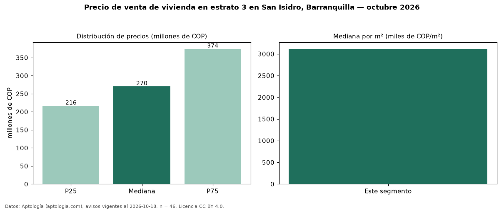

Precio de venta de vivienda en estrato 3 en San Isidro, Barranquilla — octubre 2026
COP 270 millones es el precio mediano de vivienda en estrato 3 en venta en San Isidro, Barranquilla (n = 46 avisos). Por metro cuadrado, la mediana es COP 3,11 millones/m² (n = 42 avisos con área). Incluye todos los tipos de vivienda de estrato 3 del barrio. El área mediana anunciada es 92 m². El segmento con más oferta es el de 3 o más habitaciones (42 avisos, mediana COP 290 millones). La mitad central de los avisos va de COP 216 millones a COP 374 millones (razón 1,7), una dispersión moderada. 76 % de los avisos con el dato declara parqueadero o cochera. Datos: Aptología (aptologia.com), CC BY 4.0 — https://www.aptologia.com/venta/barranquilla/san-isidro. Archivos: PDF, CSV con las cifras y gráfica PNG.

| Avisos únicos | 46 |
|---|---|
| Percentil 25 | COP 216.250.000 |
| Mediana | COP 270.000.000 |
| Percentil 75 | COP 374.000.000 |
| Mediana por m² | COP 3.114.754 |
Fuente: avisos vigentes de portales inmobiliarios recopilados por Aptología, deduplicados (mínimo 30 avisos únicos por celda). Precios pedidos, no cerrados. Fecha: 2026-10-18.